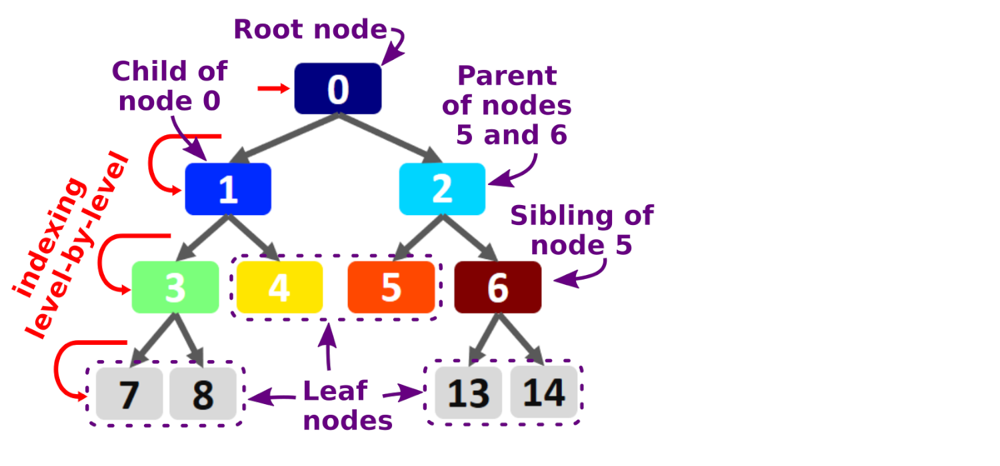

peakTree¶

Software for converting multi-peaked (cloud) radar Doppler spectra into a binary tree structure.
Technical documentation is available at peakTree-doc
See also Radenz, M., Bühl, J., Seifert, P., Griesche, H., and Engelmann, R.: peakTree: a framework for structure-preserving radar Doppler spectra analysis, Atmos. Meas. Tech., 12, 4813–4828, https://doi.org/10.5194/amt-12-4813-2019, 2019.
Requirements¶
peakTree requires python3 with following packages:
numpy==1.14.5
graphviz==0.8.2
matplotlib==2.2.2
netCDF4==1.4.2
numba==0.37.0
toml
Setup¶
The peakTree software package should be included in a file structure similar to this example:
├── data [input spectra]
├── docs [code to generate the documentation using sphinx]
│ ├── Makefile
│ └── source
├── output [converted data]
├── peakTree
│ ├── helpers.py
│ ├── __init__.py
│ ├── print_tree.py
│ ├── test_peakTree.py
│ └── VIS_Colormaps.py
├── plot2d.py
├── convert_to_json.py
├── plots [standard folder for plots]
├── reader_example.py
├── README.md
├── instrument_config.toml [radar specific configuration]
├── output_meta.toml [add your meta information here]
├── requirements.txt
├── run_conversion.py
├── run_plots.sh
├── run_doc_and_tests.sh
└── spectrum_example.py
Please update your meta information in the output_meta.toml file.
Usage¶
1. Define the peakfinding paramters¶
WIP: The peakfinding parameters are now compatible with the output of peako [Kalesse et al. 2019 AMT].
They have to be configured in the instrument_config.toml together with some instrument specific meta data.
The parameters are chirp aware.
[limrad_punta.settings.peak_finding_params.chirp2]
t_avg = 15 # s
h_avg = 0 # m
span = 0.2 # m s-1
smooth_polyorder = 1
prom_thres = 0.5 # dB
width_thres = 0 # m s-1
2. Convert a spectra file to peakTree netcdf output¶
#! /usr/bin/env python3
# coding=utf-8
import datetime
import peakTree
import peakTree.helpers as h
pTB = peakTree.peakTreeBuffer()
pTB = peakTree.peakTreeBuffer(system='Polarstern')
pTB.load_spec_file('data/D20170629_T0830_0945_Pol_zspc2nc_v1_02_standard.nc4')
pTB.assemble_time_height('output/')
3. Plot a peakTree netcdf file¶
A default plotting script is also included.
python3 plot2d.py output/20170629_0830_Pol_peakTree.nc4 --range-interval 400,5000 --no-nodes 2
# or with more options
python3 plot2d.py output/20181216_1510_Pun_peakTree.nc4 --no-nodes 2 --plotsubfolder peaktree_limrad --system limrad_peako --range-interval min,3000
#
python3 plot2d.py output/20190911_0300_Pun_rpgpy_peakTree.nc4 --range-interval 100,7000 --no-nodes 6 --system limrad_punta --plotsubfolder peaktree_limrad_punta
convert a peakTree netcdf file to dictionary format
python3 convert_to_json.py output/20170629_0830_Pol_peakTree.nc4 output/20170629_0830_data \
--time-interval 0-450 --range-interval 0-100
Binary tree structure¶

License¶
Copyright 2022, Martin Radenz, Teresa Vogl MIT License